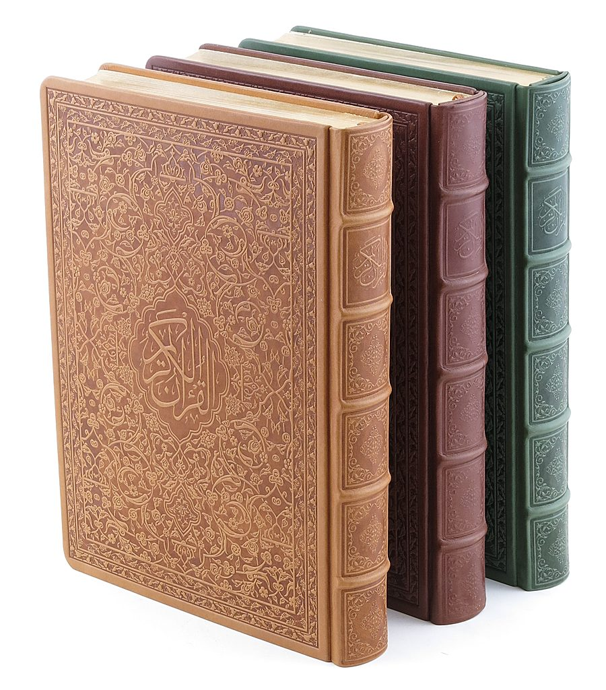
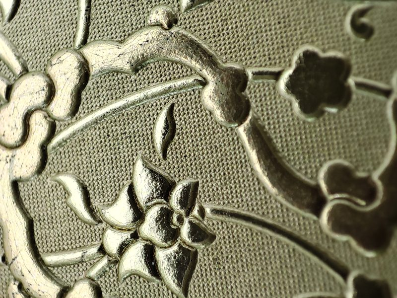

01Dini ve Klasik Eser Yayıncıları
Kur'an ve mushaf ciltleri, altın yaldızlı kenarlar, klasik desenler — kırk yıldır Türkiye'nin önde gelen yayıncıları için üretiliyor.
İstanbul'da ikinci kuşak bir deri ciltevi — 1978'den beri.

Kur'an ve mushaf ciltleri, altın yaldızlı kenarlar, klasik desenler — kırk yıldır Türkiye'nin önde gelen yayıncıları için üretiliyor.

Sınırlı ve numaralı edisyonlar için derin gofrajlı deri kapaklar, sırt kutuları (slipcase) ve kapaklı saklama kutuları (traycase).

Lazer kesim, birebir oturan iç yapıya sahip özgün kitap formunda kutu tasarımları.

Preslerimizi çalıştıran motor değil, ustanın elidir. O el her deseni okuyarak bastırır; deri, 2 mm'ye varan bir derinlikte şekillenir — tam otomatik hatların hiçbir zaman inemediği, ancak sabırla varılabilen bir derinlik.
İstanbul'un bu işe kattığı sessiz bir avantaj daha var: aynı el işçiliği, aynı sabır — Batı Avrupa cilthane fiyatlarının belirgin biçimde altında.
İşçiliği keşfedinDeri örnekleri, gofrajlı bir kapak ve mini bir saklama kutusu, 2–4 gün içinde DHL ile masanızda.